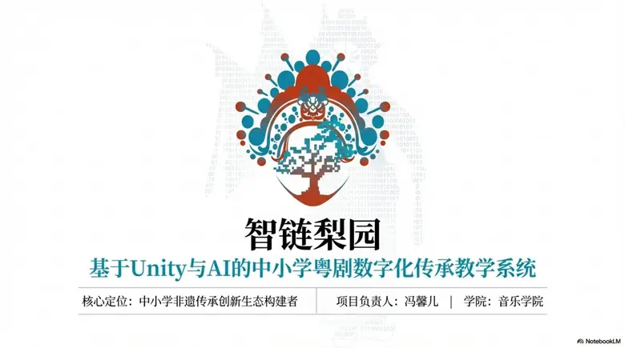
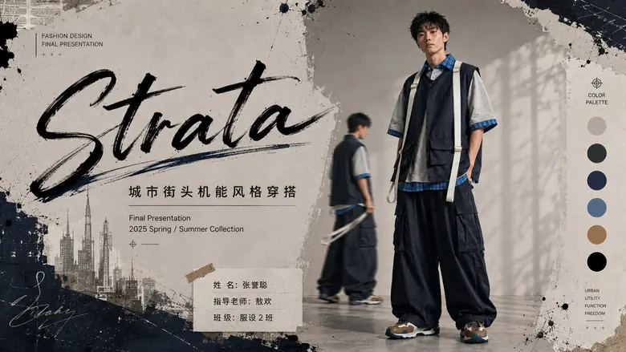
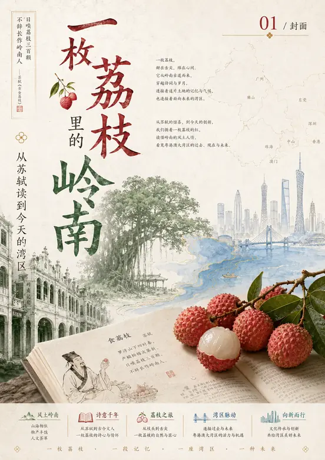

Codex / ChatGPT / Claude / Gemini
可使用 Codex 辅助网页开发、文件整理、自动化处理与代码级修改；使用 ChatGPT、Claude、Gemini 进行资料梳理、方案拆解、提示词设计、文案优化和多版本推演；结合 NotebookLM 做文献与课程资料归纳。
服装设计 · 非遗文创 · AI 高阶工作流
CODEX / CHATGPT / AI DESIGN SYSTEMS
服装设计 / AI 视觉工作流 / 非遗文创 / PPT 视觉设计
ENTER PROJECTSAI-NATIVE DESIGN WORKFLOW
可使用 Codex 辅助网页开发、文件整理、自动化处理与代码级修改；使用 ChatGPT、Claude、Gemini 进行资料梳理、方案拆解、提示词设计、文案优化和多版本推演；结合 NotebookLM 做文献与课程资料归纳。
用 AI 快速整理资料、提炼关键词、对比案例、生成设计方向和项目结构。
使用 Stable Diffusion、Midjourney、即梦 AI 进行风格探索、服装样稿和视觉参考生成。
使用 Codex 辅助搭建网站、批量整理素材、检查页面交互并优化发布流程。
把 AI 用于 PPT 结构、Word 排版、表格整理和汇报文案，让材料更清晰可展示。
用 AI 整理资料、提炼地方文化符号和趋势关键词。
用图像生成工具推演服装、文创和视觉风格方向。
用 Codex 辅助整理素材、搭建网站和检查交互。
输出作品集网站、PPT、PDF 提案和可展示材料。



CLICK TO VIEW PROJECT
PPT / CLIENT PRESENTATION DESIGN
RESUME / PROFILE
我是张誉聪，英文名 Albert Lush，目前就读于华南师范大学服装与服饰设计专业。作品方向集中在服装设计、非遗文化视觉转译、AI 辅助设计流程与商业文档排版。能使用 Codex、ChatGPT、Claude、Gemini 等工具完成研究、代码、图像、文案和交付流程的组合式工作。
参与汕尾长沙湾非遗文化调研，提炼纹样、色彩与地方符号，完成视觉识别、包装设计与展示物料。项目获绚丽年华第十八届全国美育教学成果展学生作品二等奖（国家级）。
围绕汕尾非遗元素进行数字化转译，使用 Stable Diffusion、即梦 AI 生成多方向服装样稿并筛选迭代，形成“调研-生成-筛选-展示”的 AI 设计流程。
曾以淘宝接单方式完成 PPT 设计与文档排版项目，重点处理封面视觉、章节结构、页面节奏、信息层级和图文关系，让汇报材料更适合展示与交付。
协助学院完成行政资料整理、信息提取、PPT 演示文稿、Word 文档与 Excel 表格制作，使用 Gemini/NotebookLM 建立信息整理流程。
ALL IMAGES
AWARDS / DESIGN
绚丽年华第十八届全国美育教学成果展学生作品二等奖（国家级）
三等奖